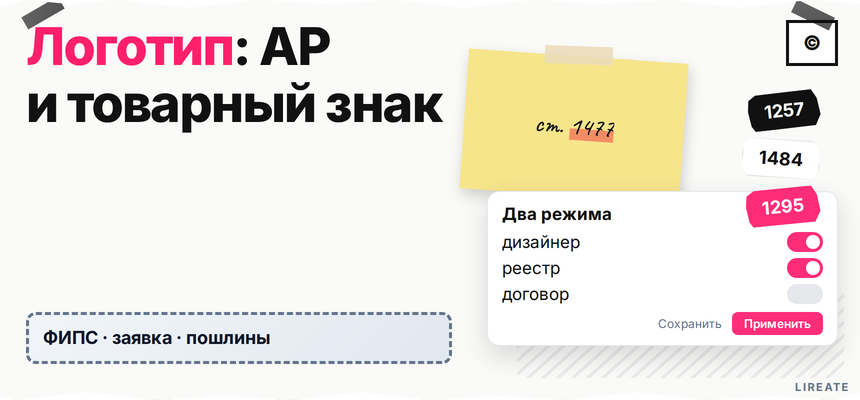

Дизайнер прислал претензию на "ваш" логотип, а конкурент печатает похожий знак на упаковке - и кажется, что это один и тот же спор. На деле графика охраняется авторским правом, а обозначение на витрине - товарным знаком в реестре: разные ответчики, документы и нормы. Ниже вы разведёте два режима, проверите договор с автором макета, выберете требования по ст. 1301 и ст. 1515 ГК РФ и соберёте доказательства до письма. 27.11.2026; не замена индивидуальной консультации.

TL;DR / Быстрый инсайт: Логотип как картинка - произведение: права с момента создания, компенсация нарушителю графики - по ст. 1301. Логотип как знак бренда - только после регистрации: монополия по ст. 1484, защита от нарушений - по ст. 1515. Оплата дизайнеру без письменной передачи оставляет автора (см. договор L11). Сначала выпишите "кто вы в споре", затем один пакет фиксации на сайте и в печати; денежный иск к ЮЛ/ИП по авторскому праву - после претензии и 30 дней (п. 5.1 ст. 1252).
Ошибка - одно письмо "за всё" и только свидетельство без договора с автором или без реестра по классам МКТУ. Получили претензию - чек-лист ответчика; чужое свидетельство - гайд по перехвату бренда.
Авторское право - про конкретный рисунок: линии, цвет, компоновку. Его можно требовать прекратить копировать и взыскать компенсацию по ст. 1301, если докажете авторство и факт воспроизведения (ст. 1270). Товарный знак - про обозначение, которым вы отличаете товары и услуги в заявленных классах МКТУ (ст. 1477). Пока нет записи в реестре, монополии на обозначение у вас нет - даже если файл лежит на сервере с символом ©.
| Вопрос в споре | Авторское право на макет | Товарный знак |
|---|---|---|
| Нужна ли регистрация | Нет | Да (свидетельство Роспатента) |
| Кого останавливают | Копию графики (визуал "как у вас") | Использование сходного обозначения в однородных товарах |
| Типовая денежная мера | Компенсация по ст. 1301 | Компенсация по ст. 1515 (иначе способы расчёта) |
Делайте: в шапке претензии напишите одну строку: "требования по исключительному праву на произведение" или "по товарному знаку № …". Не делайте: смешивать в одном абзаце ст. 1301 и п. 4 ст. 1515 без разделения эпизодов и ответчиков.
В авторском споре ключ - кто создал и кому передали исключительное право. Презумпция: автор - лицо, указанное на оригинале или экземпляре, пока не доказано иное (ст. 1257). В споре по товарному знаку стартует свидетельство: правообладатель - тот, кто внесён в реестр (ст. 1484). Это не одно лицо по умолчанию: знак в реестре на ООО, а PSD принадлежит дизайнеру - сценарий знакомый.
| Роль | Что показать в пакете | Типовая ловушка |
|---|---|---|
| Автор графики | Исходник, переписка, черновики, EXIF/история файла | Нет имени на макете и нет договора |
| Заказчик после договора | Договор, акт, пункт об отчуждении | Оплачен счёт без письменной передачи права |
| Правообладатель ТЗ | Выписка из реестра, классы МКТУ | Знак только на сайте, заявка "в процессе" |
| Штатный дизайнер | Должностная, задание, акты | Путать личный пет-проект и служебное (ст. 1295) |
Делайте: составьте таблицу "лицо - документ - дата". Не делайте: исходить из того, что "логотип на бланке компании" автоматически делает компанию автором.
Фрилансер остаётся правообладателем графики, пока нет письменного договора об отчуждении или лицензии (общий порядок - ст. 1234; программы порядок схожий в ст. 1288). В штате логотип в рамках трудовых обязанностей чаще попадает под ст. 1295, но нужны задание и акт, а не общая фраза "все результаты - работодателя".
В договоре проверьте версию файла, способы использования, гарантию "чистоты" и право дорабатывать макет. Чек - в L11.
Делайте: до конфликта запросите у дизайнера layered-файл и чек лицензий шрифтов. Не делайте: регистрировать в Роспатенте знак, если в договоре запрещена передача третьим лицам без допсоглашения.
Если спорят о скопированной картинке (тот же узор на чужой упаковке, тот же файл в объявлении), ориентир - прекратить воспроизведение и компенсация по п. 1 ст. 1301 (один способ на эпизод: вилка, 2× экземпляры или 2× лицензия). Досудебный порядок по деньгам между юрлицами и ИП - претензия и 30 дней (п. 5.1 ст. 1252). Маршрут суда - в гайде по защите ИС.
Если спорят о похожем обозначении на товарах и услугах в ваших классах МКТУ, ориентир - ст. 1515: прекращение использования, изъятие контрафакта, а при нарушении - компенсация (способы в законе отличаются от ст. 1301). Ответ на входящую претензию по ТЗ - в отдельном гайде.
Оба требования возможны, если вы владеете графикой и ТЗ, но эпизоды разделяют: копия файла и сходство обозначения - не одно и то же. Ст. 1274 на рекламу логотипа редко выручает.
Схема: роль в споре → договор/1295 → фиксация URL → претензия (прекращение + деньги) → 30 дней при AP у ЮЛ/ИП → иск; по ТЗ - реестр и однородность классов.
Делайте: в претензии укажите номер свидетельства и перечень URL, где знак на товарах. Не делайте: требовать "удалить бренд" только по авторскому праву, если претензия про словесный знак в реестре.
Как только увидели копию, сохраните страницу: полный URL, дата и время на скрине, карточка маркетплейса с ИНН продавца, макет упаковки в обороте. Для онлайн-споров по произведениям суды ориентируются на п. 55 ППВС № 10 (скрин с адресом и временем); при риске снятия - нотариальный осмотр. Для товарного знака добавьте: скрин из Поисковой платформы, выписка по вашему знаку, перечень однородных позиций в МКТУ.
Сходство знаков подтверждайте сопоставлением макетов и скринами в одном классе МКТУ. Графику сверяют по публичным копиям и метаданным файла, если исходники недоступны.
Делайте: ведите лист эпизодов: дата, URL, скрин, связь с одной рекламной кампанией или разные товары. Не делайте: писать нарушителю до фиксации - страницу часто убирают.
Дизайнер и конкурент в одном кейсе - разделяйте переписку и папки доказательств. Сомнения по пакету - услуги или контакты Лирейт.
Материал проверен: редакция Лирейт, практика споров по логотипам, договорам с дизайнерами и товарным знакам.
Достоверность данных: ст. 1257, 1274, 1295, 1301, 1477, 1484, 1515, 1252 ГК РФ (ред. с 04.01.2026), ППВС № 10 п. 55 сверены с КонсультантПлюс на 27.11.2026. Кластер A35; смежные темы: чужое свидетельство, ответ на претензию по ТЗ. Судебные номера дел без полного пути в КАД в текст не включались.
Да, как произведение. Вы можете требовать прекратить копирование графики и компенсацию по ст. 1301, если докажете авторство и использование. Но без товарного знака сложнее остановить другое, но сходное обозначение в ваших классах МКТУ - для этого нужен реестр и ст. 1515.
Договор, акт и пункт об отчуждении или лицензии; версию файла в акте; был ли сотрудник и действует ли ст. 1295. Без письменной передачи оплаченный счёт не разрушает претензию автора; сверьте чек-лист в L11.
Иногда да, если полномочия есть по обоим основаниям и эпизоды разделены. Расчёты и формулировки держите раздельно - правила компенсации разные.
Сверьте реестр и классы МКТУ, выберите маршрут из гайда по перехвату и параллельно сохраните доказательства вашей более ранней графики.
Вдохновение не равно законному использованию. Сходство до смешения в однородных товарах - риск по ст. 1484; почти полное визуальное совпадение - риск по ст. 1270. Цитирование по ст. 1274 для коммерческого знака на витрине обычно не срабатывает.
Опирайтесь на сохранённые скрины с URL и временем, нотариальный протокол, архив публикаций и переписку. Для товарного знака важны следы в обороте: упаковка, маркетплейс, рекламные кабинеты с датами.
По авторскому праву при требовании компенсации или убытков к юрлицу или ИП в арбитраже - да: п. 5.1 ст. 1252 и 30 дней. По товарному знаку порядок досудебки и ответа разбирают в гайде по претензии и в чек-листе для ответчика.